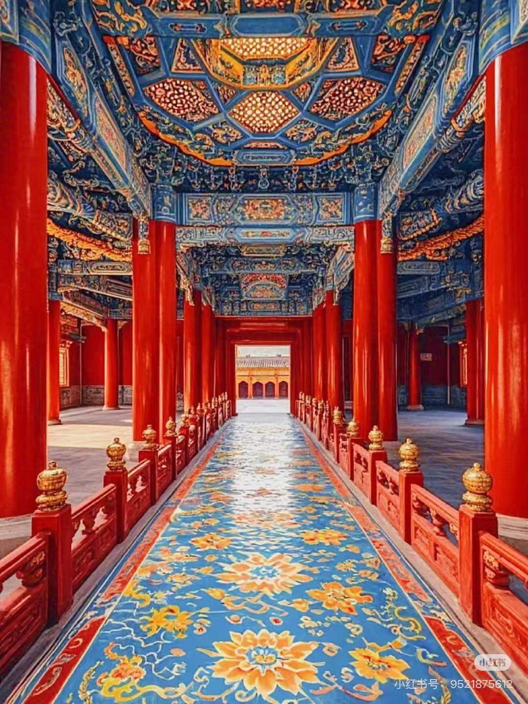
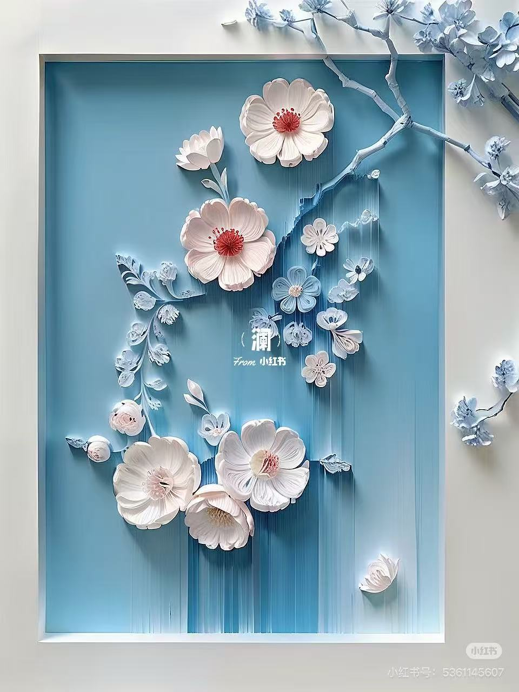

探索中国古代建筑背后的文化内涵与哲学思想
中国古代建筑深受"天人合一"哲学思想的影响，强调人与自然的和谐统一。这种思想在建筑选址、布局、造型等方面都有体现。例如，天坛的设计就充分体现了这一思想，通过圆形的祈年殿和方形的地坛，象征天圆地方，表达了对自然的敬畏和尊重。
在建筑布局上，中国古代建筑通常讲究对称、和谐，追求与自然环境的融合。例如，宫殿、寺庙等重要建筑往往建在山清水秀的地方，周围环境被精心设计，形成"山环水抱"的格局。

中国古代建筑严格遵循礼制文化，不同等级的建筑在规模、形制、装饰等方面都有严格的规定。这种等级制度体现在建筑的各个方面，从屋顶形式、开间数量到色彩装饰，都有明确的等级差别。
从高到低依次为：庑殿顶、歇山顶、悬山顶、硬山顶、卷棚顶等。
皇家建筑多为九开间，亲王七开间，以此类推，体现等级差异。
黄色琉璃瓦为皇家专用，红色墙体象征尊贵，体现等级制度。
风水文化在中国古代建筑中占有重要地位，影响着建筑的选址、布局和设计。风水强调"藏风聚气"，认为良好的风水环境能够带来好运和福祉。
在建筑选址时，风水师通常会考虑地形、水文、气候等因素，选择"背山面水"的位置，认为这样的环境能够聚集天地之气，有利于居住者的健康和运势。例如，许多古代城市和宫殿都建在依山傍水的地方，如北京的故宫就位于北京中轴线的中心，背后有景山作为"靠山"。

中国古代建筑的装饰富有象征意义，通过各种图案和符号表达吉祥、美好的愿望。常见的装饰元素包括龙、凤、麒麟等祥瑞动物，以及云纹、如意纹等吉祥图案。
象征皇权和尊贵，常用于宫殿、寺庙等重要建筑。
象征吉祥和美好，常与龙一起使用，象征龙凤呈祥。
象征吉祥如意，常用于建筑装饰和家具设计。